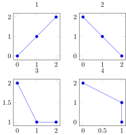
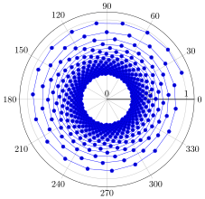
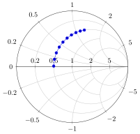

Axis-like objects
Simple group plot
cs = [[(0,0), (1,1), (2,2)],
[(0,2), (1,1), (2,0)],
[(0,2), (1,1), (2,1)],
[(0,2), (1,1), (1,0)]]
@pgf gp = GroupPlot(
{
group_style = { group_size = "2 by 2",},
height = "4cm",
width = "4cm"
}
)
@pgf for (i, coords) in enumerate(cs)
push!(gp, {title = i})
push!(gp, PlotInc(Coordinates(coords)))
end
gp
Multiple group plots
Each set of options (here, empty {}) starts a new set of axes.
x = range(0; stop =2*pi, length = 100)
@pgf GroupPlot(
{
group_style =
{
group_size="2 by 1",
xticklabels_at="edge bottom",
yticklabels_at="edge left"
},
no_markers
},
{},
PlotInc(Table(x, sin.(x))),
PlotInc(Table(x, sin.(x .+ 0.5))),
{},
PlotInc(Table(x, cos.(x))),
PlotInc(Table(x, cos.(x .+ 0.5))))
Using Axis etc in group plots
Alternatively, you can use Axis, SemiLogXAxis, SemiLogYAxis and LogLogAxis to group together options and a set of plots. This makes it easier to combine existing plots into a grouped plot.
x = range(0; stop=2, length = 100)
exp_plot = PlotInc(Table(x, exp.(x)))
exp_legend = LegendEntry(raw"$\exp(x)$")
log_plot = PlotInc(Table(x, log.(x)))
log_legend = LegendEntry(raw"$\log(x)$")
axs1 = @pgf Axis(exp_plot, exp_legend, log_plot, log_legend)
axs2 = @pgf SemiLogYAxis(exp_plot, exp_legend, log_plot, log_legend)
axs3 = @pgf SemiLogXAxis(exp_plot, exp_legend, log_plot, log_legend)
axs4 = @pgf LogLogAxis(exp_plot, exp_legend, log_plot, log_legend)
@pgf GroupPlot(
{ group_style = { group_size="2 by 2" },
no_markers,
legend_pos="north west",
xlabel=raw"$x$",
},
axs1, axs2, axs3, axs4)
Polar axis
angles = [ℯ/50*360*i for i in 1:500]
radius = [1/(sqrt(i)) for i in range(1; stop = 10, length = 500)]
PolarAxis(PlotInc(Coordinates(angles, radius)))
Smith Chart
# Samples for 100 MHz to 10 GHz
frequency = range(100e6,stop=10e9,length=10)
L = 1e-9 # 1 nH
R = 25 # 25 Ω
Z0 = 50 # 50 Ω Reference
# Series network of R + jωL, normalized
network = @. (R + 1.0im*2*pi*frequency*L) / Z0
SmithChart(Plot(Coordinates([(real(z),imag(z)) for z in network])))
Ternary axis
@pgf TernaryAxis(
{
axis_on_top,
xlabel="x", ylabel="y", zlabel="z",
colorbar
},
Plot3(
{
patch,
shader="interp",
point_meta="\\thisrow{C}"
},
Table(["x" => [0, 1, 0.5, 0.5, 0, 0],
"y" => [0, 0, 0.5, 0.5, 1, 0],
"z" => [1, 0, 0, 0, 0, 1],
"C" => [100, 0, 0, 0, 20, 100]])
)
)